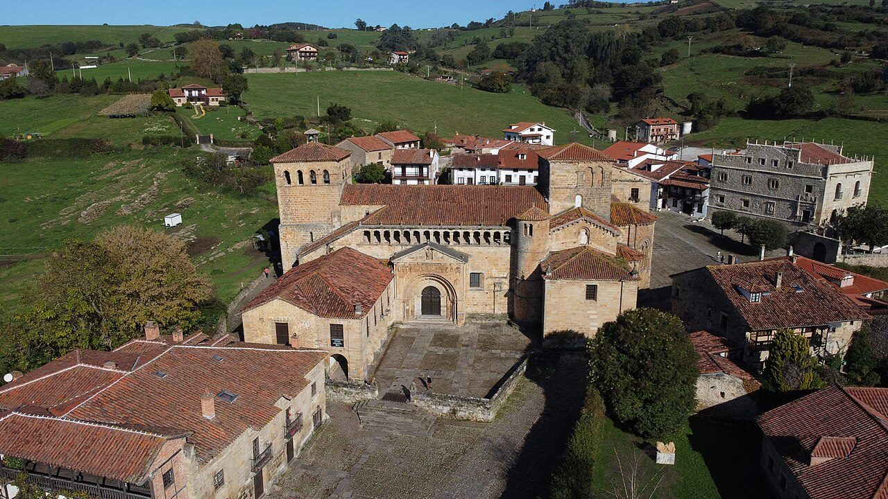
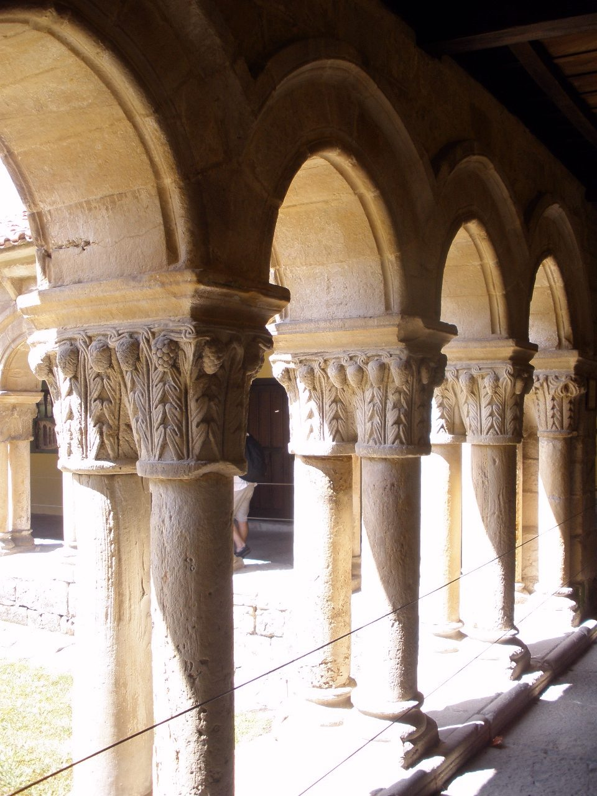
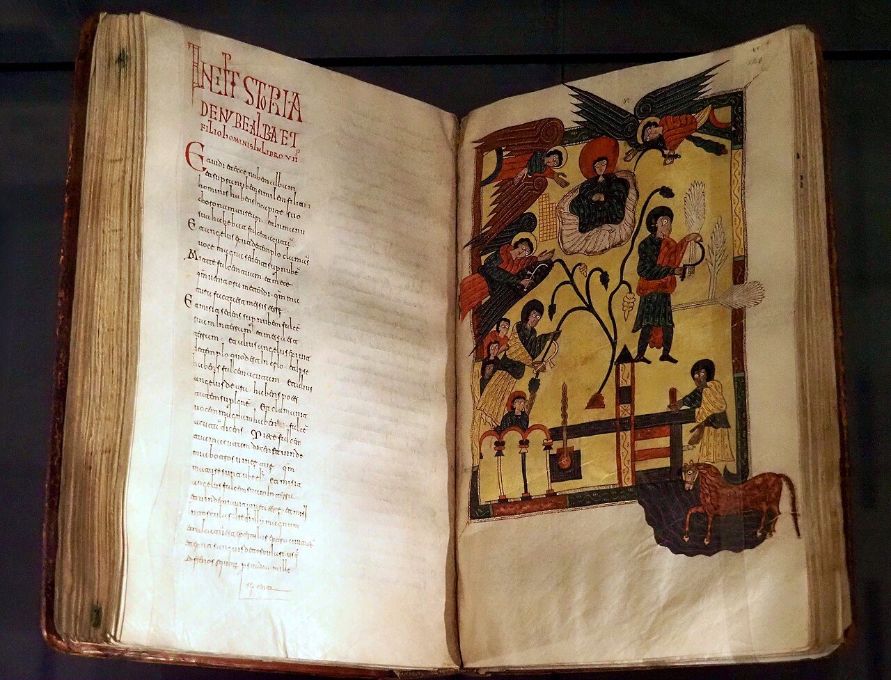

Colegiatas, iglesias y monasterios
Criterios: PC 5.1, PC 7.3
🤔 Pienso5 min
Qué hago aquí: Piensa un momento y contesta con lo que ya sabes. No pasa nada si no lo sabes: es para empezar.
¿Sabes qué es un claustro? ¿Para qué crees que servía?
📖 Leo y aprendo15 min
Qué hago aquí: Lee despacio, mira los dibujos y los ejemplos, y quédate con la idea clave del final.
Un monasterio es el lugar donde vive una comunidad de monjes o monjas. Una colegiata es una iglesia importante, atendida por un grupo de clérigos llamados canónigos. Muchas colegiatas de Cantabria fueron antes monasterios.
| Edificio | Lo más destacado |
| Colegiata de Santa Juliana (Santillana del Mar) | La más importante del románico cántabro. Claustro con capiteles historiados y el sepulcro de la santa |
| Colegiata de la Santa Cruz (Castañeda) | Gran cimborrio sobre el crucero y una portada con muchos arcos |
| Colegiata de San Pedro (Cervatos, Campoo) | Sus canecillos, de los más famosos de España |
| Colegiata de San Martín (Elines, Valderredible) | Claustro, torre y una necrópolis medieval al lado |
| Monasterio de Santo Toribio (Liébana) | Guarda el Lignum Crucis. Aquí escribió el Beato sus Comentarios al Apocalipsis |

Foto: Luis Fermín TURIEL PEREDO · CC BY-SA 4.0 · Colegiata de Santa Juliana, Santillana del Mar 03.jpg

Foto: Zarateman · CC0 · Santillana del Mar - Colegiata de Santa Juliana, claustro 04.jpg

Foto: Laci3 · CC0 · Beato de Liébana - Comentario al Libro del Apocalipsis - Biblioteca de El Escorial (1).jpg
✏️ Hago25 min
Qué hago aquí: Haz las actividades en orden. Empieza siempre por las básicas.
Explica la diferencia entre monasterio, colegiata y catedral. ¿Por qué muchas colegiatas de Cantabria fueron antes monasterios?
Explica para qué servía un claustro y por qué sus capiteles eran un buen lugar para contar historias.
Completa una tabla con las cuatro colegiatas: lugar, comarca y elemento más destacado. ¿Cuáles están en el sur de Cantabria?
Explica quién fue el Beato de Liébana, qué escribió y por qué sus copias son patrimonio documental.
Copiar un beato podía llevar varios años. Calcula: si un copista hacía media página al día y el libro tenía unas 300 páginas con ilustraciones que costaban el triple, ¿cuántos días aproximados tardaría? Explica qué supuestos haces.
Los beatos están hoy repartidos por bibliotecas de varios países. ¿Deberían volver a España? Escribe un argumento a favor y otro en contra.
Explica por qué un monasterio medieval era a la vez lugar de oración, de trabajo, de estudio y de poder económico.
🚀 Amplío (si quieres saber más)
Qué hago aquí: ¿Has terminado? Lee la curiosidad o elige el reto. Es voluntario.
Investiga un beato concreto (por ejemplo, el de Valcavado, el de Silos o el de Fernando I y doña Sancha): dónde se conserva, de qué siglo es y cómo son sus ilustraciones. Describe una de ellas y explica qué escena del Apocalipsis representa.
✅ Compruebo5 min
Qué hago aquí: Contesta sin mirar la ficha y marca cómo lo llevas.